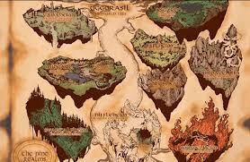
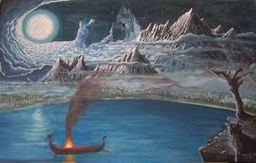
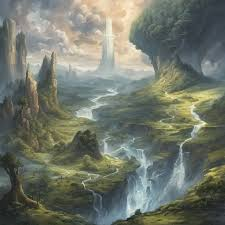
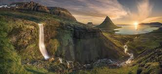
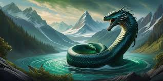

midgard
Hogar de los humanos:
Midgard es el lugar donde viven los hombres y mujeres, creado por los dioses a partir del cuerpo del gigante Ymir. Los humanos fueron moldeados por los dioses Odín, Vili y Vé a partir de troncos de fresno (Ask) y olmo (Embla).
Ubicación en los Nueve Mundos:
Midgard se encuentra en el centro del cosmos, conectado a Asgard (hogar de los dioses Æsir) mediante el puente del arcoíris, Bifröst. Está protegido por los dioses contra criaturas y fuerzas destructivas provenientes de otros mundos, especialmente Jötunheim (hogar de los gigantes).
Protección contra amenazas externas:
Midgard está rodeado por un océano impenetrable que alberga a la serpiente gigante Jörmungandr (la Serpiente de Midgard). Esta criatura envuelve el mundo entero, mordiéndose la cola, simbolizando el infinito y el ciclo eterno. Los dioses construyeron un muro invisible para proteger Midgard de los gigantes y otras amenazas.
Creación del mundo:
Según las Eddas, el mundo fue formado a partir del cuerpo del gigante primordial Ymir: Su carne formó la tierra. Su sangre se convirtió en los océanos. Sus huesos se usaron para crear montañas. Su cráneo se convirtió en el cielo. Su cerebro formó las nubes. Midgard fue diseñado como un lugar habitable para los humanos, con un equilibrio entre naturaleza, humanidad y lo divino.
Relación con los dioses:
Aunque los humanos habitan Midgard, están bajo la vigilancia y protección de los dioses. Los dioses tienen un interés activo en los asuntos humanos, aunque no intervienen directamente en todo. Las almas de los mortales que mueren en combate pueden ser llevadas a Valhalla o Fólkvangr, dejando Midgard y entrando en reinos divinos.
Midgard y el Ragnarök:
En la profecía del Ragnarök, el apocalipsis nórdico, Midgard juega un papel crucial: La serpiente Jörmungandr emergerá del océano y luchará contra Thor. El mundo será consumido por fuego y destrucción. Sin embargo, de las cenizas surgirá un nuevo mundo, y algunos humanos (Líf y Lífthrasir) sobrevivirán para repoblar Midgard.
Simbolismo
Midgard simboliza el reino de la humanidad, el esfuerzo humano por sobrevivir y prosperar en un entorno desafiante. Su conexión con Asgard a través de Bifröst representa la interdependencia entre lo humano y lo divino.